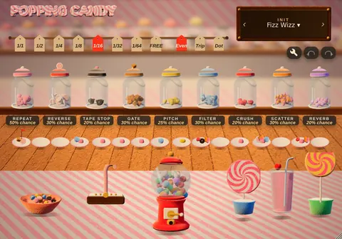
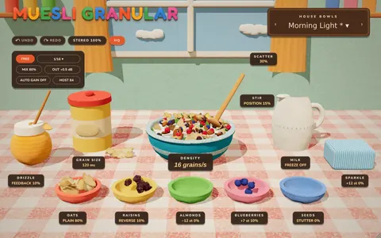

Creative effects you play like toys
Some plugins fix problems. These make new ones, on purpose: stutters, tape stops, grains, sweeps and movement, all in time with your track.
Black Friday: all 16 plugins for $29 with the Full Fridge (was $50), until 1 December. See the deals
Use them for fills, build-ups and transitions, or leave one running on a loop and record what happens. The rhythmic ones follow your tempo, and Popping Candy rolls a fresh pattern whenever you want a surprise.
Try stacking them: a filter into a glitch into a reverb, then bounce the happy accidents.
What to reach for
- Popping Candy (glitch and stutter). Nine effects that pop on random steps: repeat, reverse, tape stop, gate, pitch, filter, crush, scatter and reverb.
- Food Fight (performance multi-effect). Eight effects on eight foods, thrown in time by a catapult. Made for playing live.
- Muesli Granular (granular). Cuts your audio into grains and scatters them, from shimmer to full glitch texture.
- Noodle Filter (filter). A resonant filter with built-in movement for sweeps and auto-wah.
- Hot-o-Pan (auto-pan). Auto-pan and tremolo that flips between left and right in time.
- Spaghetti Delay (delay). Freeze the last repeats into a loop and play with it.
- Gummy Gate (gate). A trance gate that chops pads into rhythm.

Popping CandyGlitch and stutter plugin Food FightPerformance multi-effect plugin
Food FightPerformance multi-effect plugin
Muesli GranularGranular effect plugin Noodle FilterFilter plugin
Noodle FilterFilter plugin Hot-o-PanAuto-pan plugin
Hot-o-PanAuto-pan plugin Spaghetti DelayDelay plugin
Spaghetti DelayDelay plugin Gummy GateGate plugin
Gummy GateGate plugin
Get all 16 in the Full FridgeTry them free first
Recipes to try
Questions
What is a glitch plugin?
It chops, repeats, reverses and stutters your audio in time with the song. Popping Candy does it with nine effects that trigger on random steps.
Can I use these live?
Yes. Food Fight is built for performance, and all of them sync to your DAW's tempo.
Can I try them before buying?
Yes. Every plugin has a 3-day free trial, and Butter Spread, our stereo widener, comes with a free licence.
Which formats do they come in?
AU, VST3 and AAX on Mac (Apple-notarised installers) and VST3 on Windows 10 and 11.
More menus
Lo-fiVocalsDrumsMasteringBeginnersHip hop and trapFL StudioLogic ProAbleton LivePro Tools